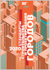
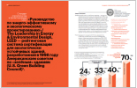
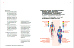
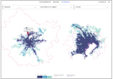
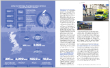
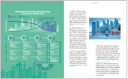
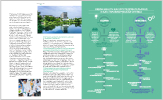
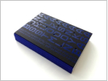
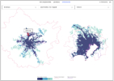

Деятельность
Услуги
Центр предлагает широкий спектр услуг по вопросам пространственного развития, решения исследовательских задач, участия в разработке реальных продуктов на различных стадиях. Мы всегда готовы рассмотреть нестандартные задачи и проблемы.
Территориальное развитие и маркетинг
Отраслевые исследования и обзор рынков
Сопровождение инвестиционных проектов
Разработка и запуск кастомизированных образовательных продуктов
Проведение стратегических форсайт-сессий
Разработка пространственных интервенций
Исследовательская программа
Исследование лучших мировых практик в области стандартов здорового строительства и проектирования городской среды
Итоговые продукты:
- Опубликован отчет «Обзор стандартов проектирования и строительства городов, ориентированных на вопросы здоровья и принципы Urban Health»;
- Презентация результатов исследования на МУФ-2019.




Urban Health Agenda. Мир>Россия>Москва
Исследование посвящено анализу актуальных вызовов здоровью населения крупнейших мегаполисов мира, оценке наиболее значимых средовых факторов риска здоровью, а также рассмотрению лучших международных практик внедрения принципов общественного здравоохранения в развитие городской среды.
Итоговые продукты:
- +25 проектов по внедрению Urban Health в повестку развития России и Москвы;
- Презентация результатов исследования на МУФ-2018;
- Издана книга «Urban Health» (первая публикация в России по данной тематике).



Исследование метропольных городов и их систем управления «Эпоха агломераций. Мир>Россия>Москва
Цель проекта выявить лучшие практики управления развитием мегаполиса в масштабах агломерации, а также описать наиболее эффективные инструменты и модели развития, используемые глобальными лидерами.
Итоговые продукты:
- Разработана интерактивная онлайн-платформа (www.agglomerations.ru);
- Издана книга «Эпоха агломераций. Городская экономика, политика и пространство в новом масштабе»;
- 20+ проектов развития Московской агломерации;
- Презентация результатов исследования на МУФ-2017.


Здоровье мегаполиса. Международный рэнкинг городов-лидеров повестки Urban Health
Исследование ставит своей целью создать международный рэнкинг «здоровья» разных мегаполисов мира и оценить степень внедрения принципов Urban Health в их управленческие модели. Также работа содержит обзор лучших практик управления, в части инструментов и механизмов оценки эффектов реализации городских проектов и программ на здоровье горожан.
Устойчивое развитие Москвы. Внедрение ЦУР ООН в управление мегаполиса
Цели устойчивого развития ООН активно внедряются в управленческие практики крупнейших мегаполисов мира. Используя методологию ООН, можно оценить эффекты влияние масштабных изменений проводимых Москвой на ключевые сферы жизни человека, в сравнении с другими крупнейшими городами мира.
Серебряный мегаполис. Стратегии и инструменты управления последствиями старения населения городов
Исследование делает попытку выявить, какие подходы, стратегии и меры применяют мегаполисы для управления последствиями старения населения, в части адаптации городской среды, социальных сервисов и поддержания устойчивой динамики социально-экономического воздействия.
Образовательная миссия
Аналитический центр в рамках исследовательской программы ведет совместно с ведущими университетами образовательные инициативы по актуальным вопросам развития мегаполисов
Ключевой партнер программы
Высшая школа урбанистики имени А. А. Высоковского НИУ ВШЭ
Запуск научно-исследовательской мастерской Здоровье в городе (Urban Health)
Даты проведения
Зима-осень 2020 г.
цель
Освоение актуальных теоретических понятий, подходов, и примеров практической реализации Urban Health в мировой практике развития городов через пространственные и управленческие решения.
Описание
Программа мастерской направлена формирование общего понимания и проблематики Urban Health как академической дисциплины и управленческой модели. В рамках курса рассматриваются как разные города борются за здоровье своих горожан и как урбанисты, градостроители, управленцы и специалисты в сфере общественного здоровья могут помочь сделать города более здоровыми и благополучными
Ключевой партнер программы
Высшая школа урбанистики имени А. А. Высоковского НИУ ВШЭ
Научно-образовательная программа исследования «Здоровье мегаполиса. Международный рэнкинг городов-лидеров повестки Urban Health»
Даты проведения
Зима-осень 2020 г.
цель
Интеграция в образовательные проекты студентов знания о подходе Urban Health, а также ковлечение образовательных центров в повестку здорового развития городов
Описание
В рамках проведения исследования команда Аналитического центра провела специальный курс семинаров по актуальным проблемам устойчивого развития крупнейших мегаполисов мира. В рамках работы семинары студенты были вовлечены в подготовку отдельных материалов вошедших в итоговый отчет исследования
Ключевой партнер программы
Географический Факультет МГУ имени М. В. Ломоносова
Программа научно-практических семинаров исследования «Устойчивое развитие Москвы. Внедрение ЦУР ООН в управление мегаполисом»
Даты проведения
Зима-осень 2020 г.
цель
Интеграция ведущих научных и образовательных центров в процесс проведения исследования, а также передача результатов анализа актуальных практик и опыта мегаполисов мира студентам и сотрудникам
Описание
В рамках проведения исследовательской программы по направлению «Urban Health» был запущен цикл научно-практических семинаров о ключевых вопросах городского развития ориентированного на снижение рисков здоровью горожан. В ходе работы студенты подготовили собственные обзоры моделей управления отдельных городов и описания ключевых рисков здоровью их горожан